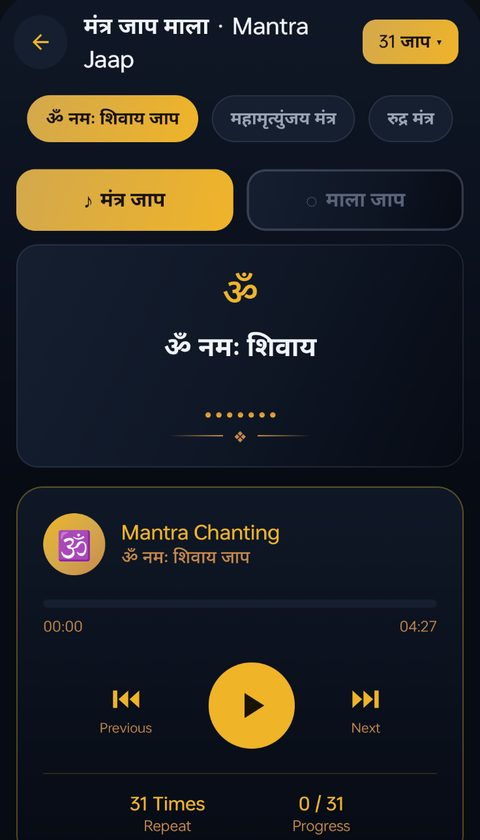
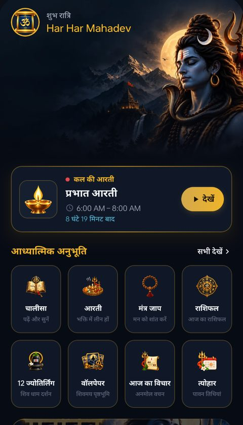
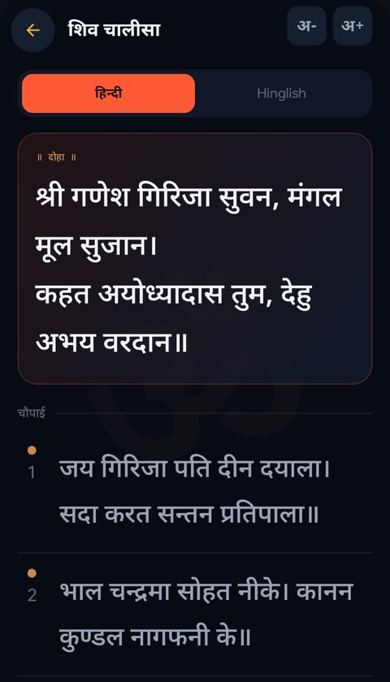

Quick answer: Om Namah Shivaya means "I bow to Shiva". It is the Panchakshari (five-syllable) mantra: Na, Ma, Shi, Va, Ya. For jaap, sit facing a Shivling or Shiv Ji's picture, light a diya, and chant the mantra once per bead on a 108-bead mala, traditionally without crossing the sumeru bead. Monday, Sawan, Pradosh and Mahashivratri are especially auspicious.
Key facts
- Meaning: "I bow to Shiva"
- Name: Panchakshari mantra (5 syllables)
- Count: 108 times, one round of a mala
- Best days: Monday, Sawan, Pradosh, Mahashivratri
- Shiv Dham app: digital jaap mala, 11 to 1008
The Meaning of Om Namah Shivaya
ॐ नमः शिवाय (Om Namah Shivaya) is known as the Panchakshari mantra, the "five-syllable" mantra: Na · Ma · Shi · Va · Ya, with Om added before it. In simple words it means "I bow to Shiva".
- 🕉️Om is the sacred sound used at the start of mantras.
- 🙏Namah means "I bow" or "salutations".
- 🔱Shivaya means "to Shiva", the auspicious one.
Simple Jaap Vidhi at Home
- Bathe and wear clean clothes. Sit on an asan facing a Shivling or a picture of Shiv Ji.
- Light a diya and incense. Offer water, bel patra or a white flower if you have them.
- Take a sankalp. Silently say your name and what you are chanting for, or simply offer the jaap to Mahadev.
- Hold the mala in your right hand. Traditionally the index finger does not touch the beads; the thumb moves each bead.
- Chant once per bead, slowly and clearly, aloud, in a whisper or in your mind.
- Complete 108 beads. Traditionally you do not cross the larger sumeru bead; you turn the mala and start the next round from there.
- Finish with a prayer and sit quietly for a minute.
📿 Why 108? A traditional japa mala has 108 beads, so one full round is 108 chants. If 108 feels long, start with 11 or 21 and grow slowly.
Best Days and Times for Shiv Jaap
Monday is Lord Shiva's day, and the month of Sawan, Pradosh vrat and Mahashivratri are especially auspicious. But the best time is the one you can keep every day. A short, sincere daily jaap is better than a long one done once in a while.
What Devotees Say They Feel
Devotees describe the jaap as calming and centring. Many say it helps them:
- 🧘Feel calm and set down the worries of the day.
- 🎯Focus, because repeating one mantra keeps the mind in one place.
- 🙏Feel close to Mahadev as part of a daily routine of bhakti.



Keep Count with the Shiv Dham Jaap Mala
No mala at hand, or losing count? The free Shiv Dham app has a digital jaap mala for Om Namah Shivaya, the Mahamrityunjaya mantra and Rudra mantras, with counts from 11 to 1008. The app also has the Shiv Aarti with reminders, the Shiv Chalisa in Hindi and Hinglish, virtual darshan and the 12 Jyotirlinga.
Frequently Asked Questions
What is the meaning of Om Namah Shivaya?
It means "I bow to Shiva". It is called the Panchakshari mantra because Namah Shivaya has five syllables: Na, Ma, Shi, Va, Ya.
How many times should I chant Om Namah Shivaya?
Traditionally 108 times, one round of a japa mala. You can start with 11 or 21 and slowly grow to 108 or more.
Which day is best for Om Namah Shivaya jaap?
Monday is Lord Shiva's day. Sawan, Pradosh vrat and Mahashivratri are especially auspicious. A daily morning jaap is also good.
Can I chant Om Namah Shivaya without a mala?
Yes. You can count on your fingers or use the digital jaap mala in the Shiv Dham app.
Har Har Mahadev
Jaap mala, Shiv Aarti, Shiv Chalisa, darshan and 12 Jyotirlinga. Free on Google Play.

Written by Kamal Kakkar
Founder of Yunok Tech and Android developer with 10+ years of experience at Nagarro and KareXpert, building apps for the healthcare and banking domains. Kamal also teaches Kotlin & Jetpack Compose.
LinkedIn → Medium → Android Course →